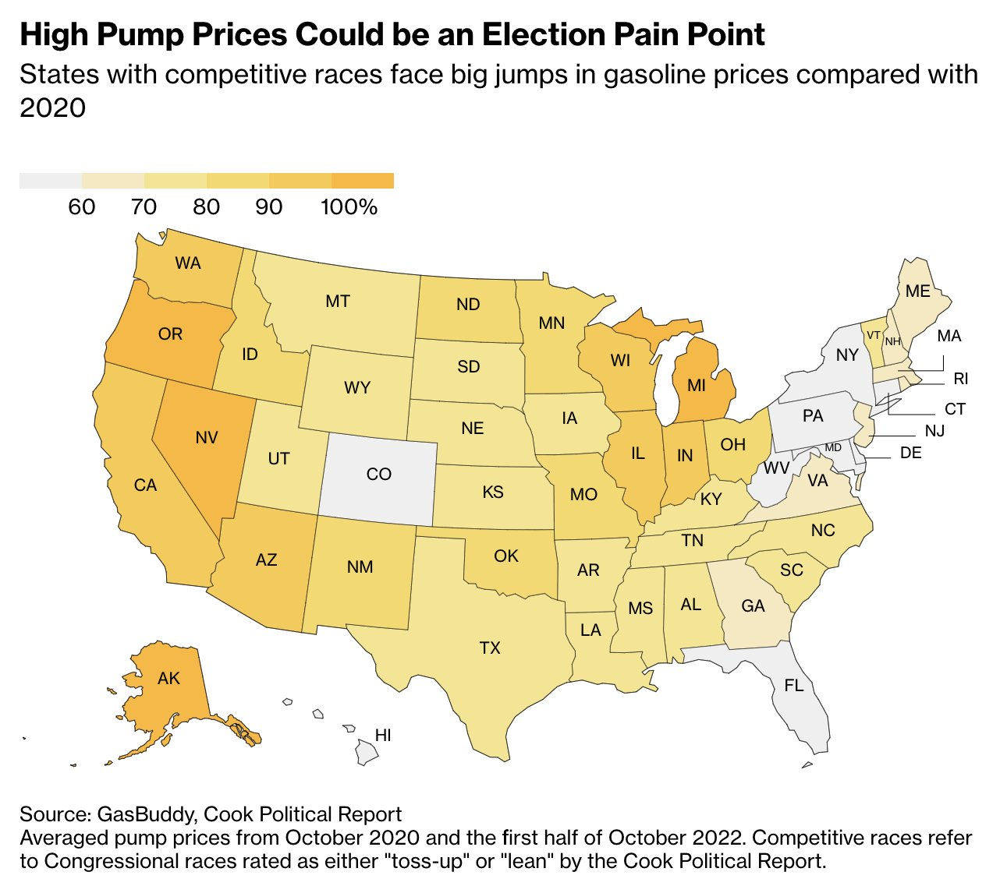

ILENA PENG
👋 Currently: Reporter at Bloomberg News
💻 Things I often use: Python for data analysis & R, Adobe Illustrator and ai2html for visualization
📚 Where I learned: Columbia Journalism School & The George Washington University
✨ Highlights
Click on the headlines to view each project
What Do Places With Highest Gas Prices Have in Common? They're Swing States
Bloomberg News US pump prices - an easily visible sign of inflation - remained high, including in key swing states, just weeks away from the midterm elections.
When Amazon Puts a Warehouse Next Door: ‘We Can’t Escape It’

Bloomberg News Amazon's expansion of last-mile delivery stations have crept closer to residential neighborhoods, including in towns like Milford, Massachusetts.
New York’s Once-booming Oil Industry and the Risky Wells it Left Behind

City & State New York Western New York towns were built around oil production. Now, they’re grappling with the remnants of a declining industry.
📊 Data Reporting
US Oil Refineries Find Paying Fines Can Be Cheaper Than Cleaning Up - Bloomberg News
Northern California's kelp forests have disappeared since 2008 - Columbia Journalism School
Asian population declines in Manhattan’s Chinatown – AsAm News
Hate crimes continue to surge in Second District – The GW Hatchet
🌊 Enterprise & Features
Insulin Price Cuts Could End Up Making Money for US Drugmakers – Bloomberg News
Opioid Crisis Spurred by Animal Sedative’s Stealth Emergence – Bloomberg News
Eating disorder treatment may stay online even after the pandemic – Teen Vogue
How eating disorder recovery plans aren’t accommodating of cultural foods – Nextshark
Click here to view more clips >>